Do marine protected area announcements trigger preemptive overfishing?
New insights from tuna catch and effort data
University of Miami Rosenstiel School of Marine, Atmospheric, and Earth Science
Do marine protected area announcements trigger preemptive overfishing? New insights from tuna catch and effort data
Emily Rodriguez
University of Miami Rosenstiel School of Marine, Atmospheric, and Earth Science
Project Committee
Dr. Juan Carlos Villaseñor-Derbez, Chair and Internship Supervisor
Gavin McDonald, Member
Dr. Manoj Shivlani, Member
A call for expanded protection
30x30 Target (Secretariat of the Convention on Biological Diversity 2022)
- Protect and effectively manage 30% of marine areas by 2030 via marine protected areas (MPAs).
- Conservation efforts should be equitably governed where affected stakeholders included in decision making.
- Procedural Equity
- Representative Equity
Key Question:
How might fishers react when they learn they are going to lose access to established fishing grounds?
Two paradoxes
The Green Paradox
Example: Private forest owners in North Carolina preemptively destroyed an endangered species’ habitat to avoid future restrictions on their property (Lueck and Michael 2000).
The Blue Paradox
The announcement of a future no take MPA in Kiribati caused an increase in fishing effort in the area slated for protection leading up the the MPA’s implementation (McDermott et al. 2019).
Key differences:
Only one documented case of a blue paradox.
You don’t “own” a plot of ocean in the same way you own a plot of land.
The blue paradox has implications for equitable establishments of MPAs.
Competing explanations
McDermott et al. (2019) found a 130% increase in fishing effort following the announcement of the Phoenix Islands Protected Area (PIPA).
- Two explanations \(\rightarrow\) both agree on the effort increase
- Neither agree why
- Preemptive behavior vs. environmental factors?
Catch per unit effort (CPUE)
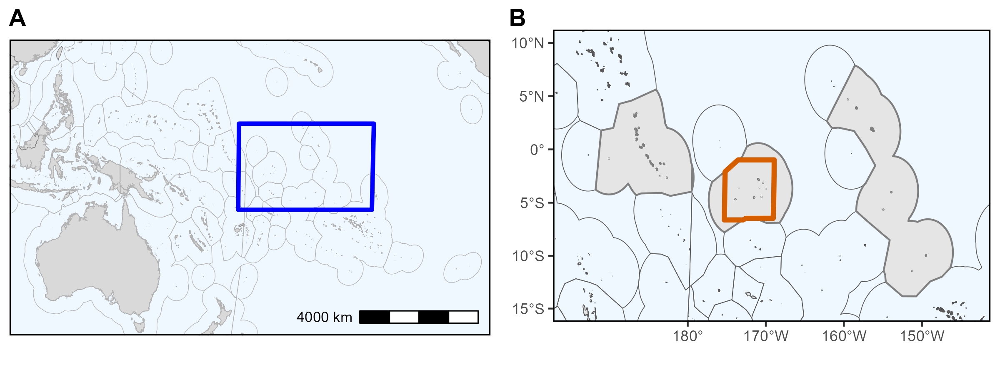
The CPUE hypothesis
McDermott et al. (2019) found a 130% increase in fishing effort following the announcement of the Phoenix Islands Protected Area (PIPA).
The blue paradox explanation:
- Fishers rushed into the soon-to-be MPA before closure.
- Effort \(\uparrow\) over the same amount of fish.
- Therefore: CPUE should remain stable or even \(\downarrow\) over time
The environmental explanation:
- Fishers increased effort because of favorable environmental conditions created by the El Niño Southern Oscillation.
- Effort \(\uparrow\) while stock \(\uparrow\).
- Therefore: CPUE should \(\uparrow\)
CPUE data was not used for the original analysis
Assessing the competing hypotheses
- Data: Use publicly available regional fisheries management organization (RFMO) data compared to vessel tracking data.
- Analysis: Incorporate tuna purse seine effort and catch data available from RFMOs to calculate CPUE.
- Research questions:
- Can RFMO data reproduce the effort patterns reported by McDermott et al. (2019)?
- If so, which hypothesis does the addition of CPUE support?
Separating announcement effects from environmental change
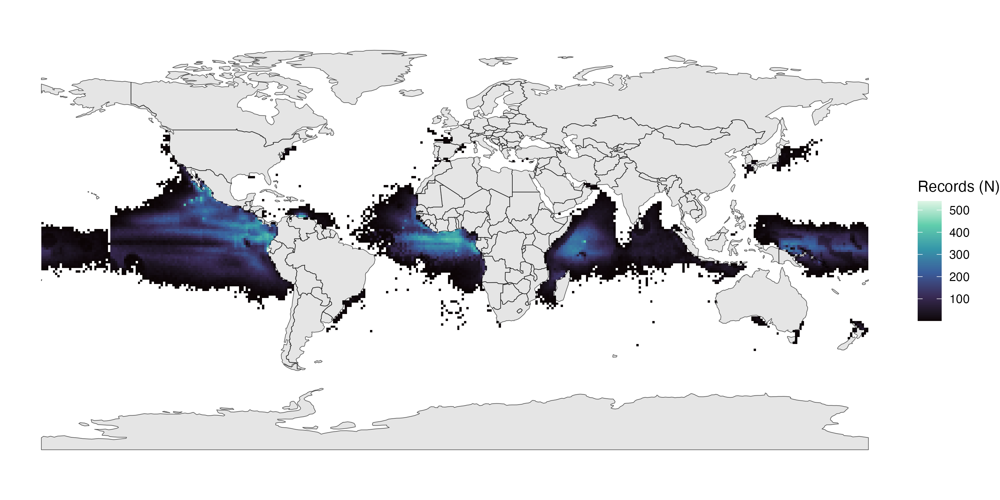
Juan Carlos Villaseñor-Derbez (2026)
Separating announcement effects from environmental change
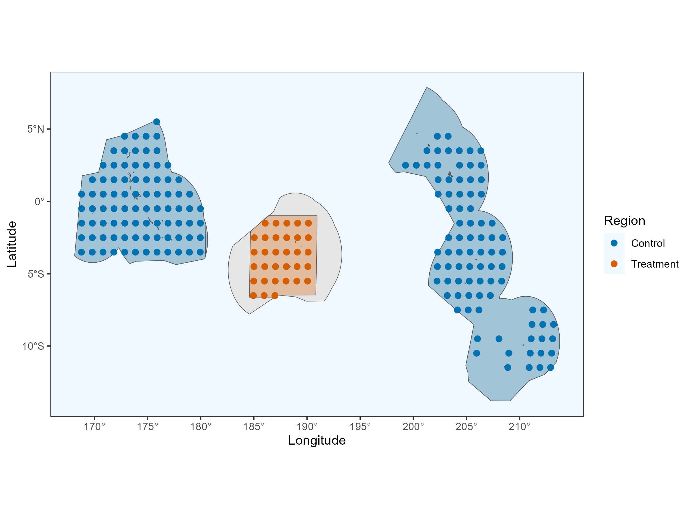
- Impact: PIPA: Area within or intersecting the MPA boundary
- Control: Line + Gilbert Islands: Comparable areas outside PIPA
- Aggregate data by region and month
- Standardize by area
Separating announcement effects from environmental change
- Analyze: Fishing activity changes in both regions
- Temporal range: 1 year before MPA announcement \(\rightarrow\) MPA establishment
- Question: How changes in the treated region compare to the control
- Difference-in-differences model
- Key estimate: \(\beta_3\) (our estimate of the blue paradox in PIPA)
Compare the two changes
Hypothetical values for illustration only
Can RFMO data reproduce documented effort spikes?
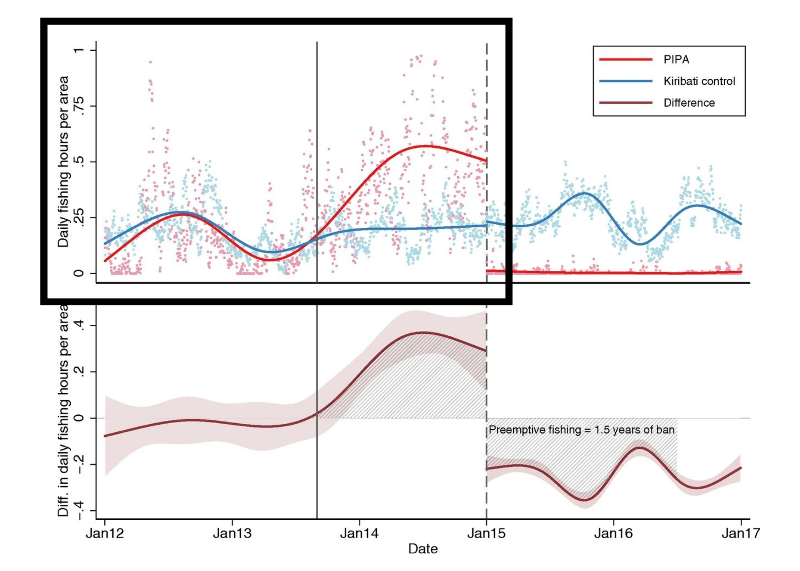
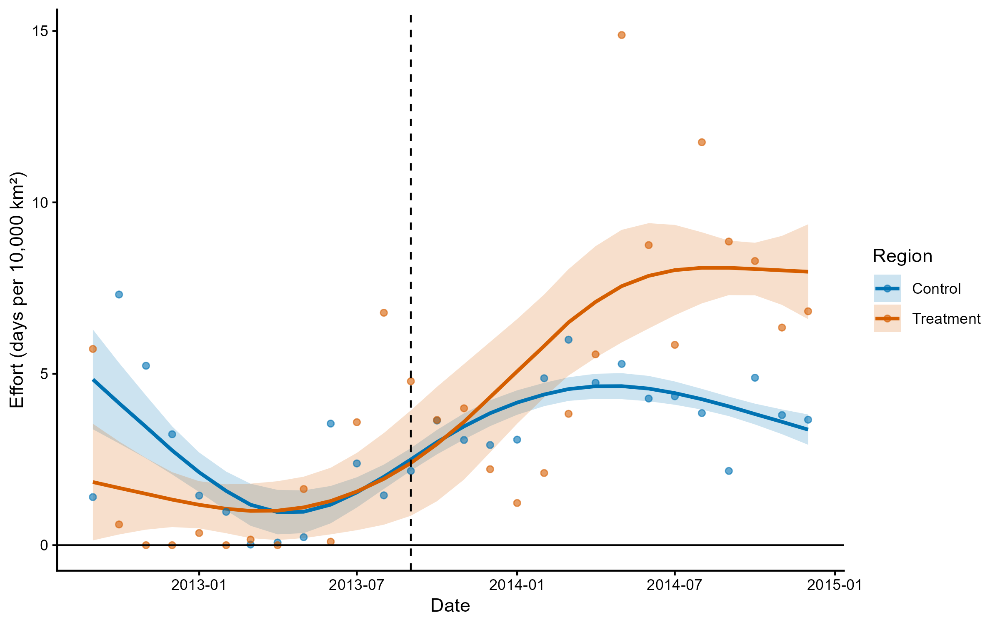
What does the addition of CPUE reveal?
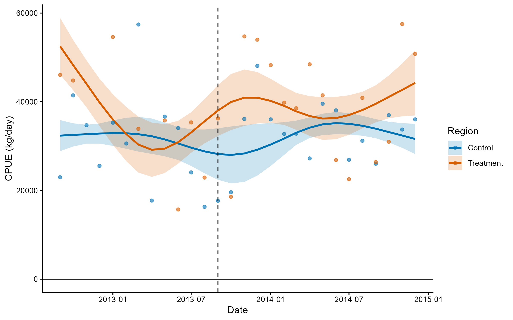
- \(\beta\) = 0.192, SE = 0.192, p < 0.1
Environmental hypothesis: CPUE should \(\uparrow\)
Blue paradox hypothesis: CPUE should remain stable or even \(\downarrow\) over time
Implications for Equitable MPA Design
What did we learn from PIPA?
- RFMO data can reproduce broad fishing-effort patterns.
- Increased effort does not necessarily indicate preemptive fishing.
What does this mean for MPA design?
- Ecological conditions may explain fishing responses.
- Better data are needed to distinguish these explanations.
Understanding why fishing activity changes before an MPA can help inform more equitable conservation planning
Questions?
References
Appendix
Data Preparation
- Source: IATTC and WCPFC monthly catch and effort data (Inter-American Tropical Tuna Commission (2026), Western and Central Pacific Fisheries Commission (2026)).
- Select: Grid cells inside or intersecting PIPA and the control EEZs.
- Aggregate: Sum catch, fishing days, and sets by region and month.
- Before: pre-announcement
- After: anticipation period
- Standardize: Express effort and catch per 10,000 km²; calculate CPUE (total catch / total effort).
Final estimation panel
- 52 region-month observations
- 28 control cells · 24 treated cells
Separating MPA effects from environmental change
Impact: PIPA Area within or intersecting the MPA boundary
Control: Line + Gilbert Islands Comparable areas outside PIPA
Difference-in-differences model \[\text{log}(Y_{it}) = \beta_0 + \beta_1\text{Treatment}_i + \beta_2\text{Post}_t + \beta_3(\text{Treatment}_i \times \text{Post}_t) + \epsilon_{it}\]
Key estimate: \(\beta_3\)
- The additional change in PIPA relative to the change in control areas (our estimate of the blue paradox in PIPA)
CPUE hypothesis
\[CPUE = \frac{C}{E} = qN\]
\(q\) = catchability; \(N\) = biomass; \(E\) = effort.
| Blue Paradox | ENSO | |
|---|---|---|
| Biomass (\(N\)) | 100 → 100 | 100 → 150 |
| Effort (\(E\)) | 10 → 20 | 10 → 20 |
| Catchability (\(q\)) | 0.01 | 0.01 |
| CPUE | 1 → 1 | 1 → 1.5 |
- Blue Paradox: More effort alone does not increase CPUE.
- ENSO: More abundance should increase CPUE.
Illustrative values; assuming constant catchability.
Global Fishing Watch data comparison
Fishing days
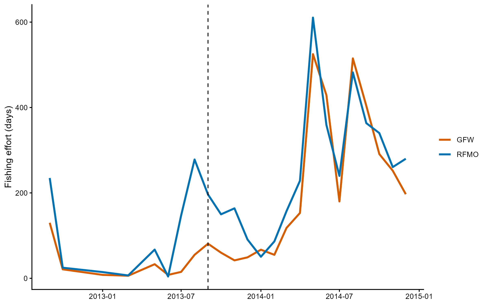
Figure 1: Author’s own work; manuscript in preparation (2026). Data for these time-series comparisons are obtained from Rodriguez and Juan Carlos Villaseñor-Derbez (2026) and Nate Miller (he/him) et al. (2026).
RFMO fishing days vs GFW fishing hours
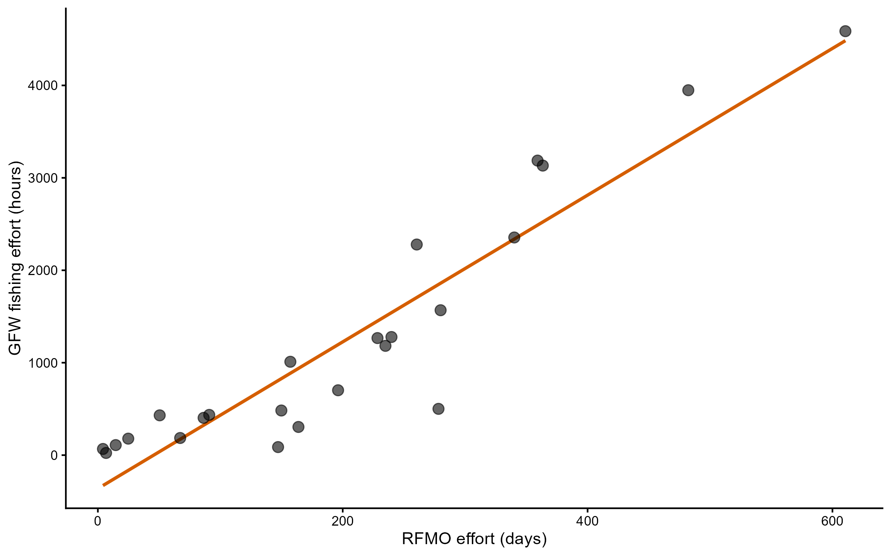
Figure 2: Author’s own work; manuscript in preparation (2026). Data for these time-series comparisons are obtained from Rodriguez and Juan Carlos Villaseñor-Derbez (2026) and Nate Miller (he/him) et al. (2026).
Phoenix Island Protected Area full results

Figure 3: Author’s own work; manuscript in preparation (2026).
Additional Case Studies
Galápagos Marine Reserve
Map
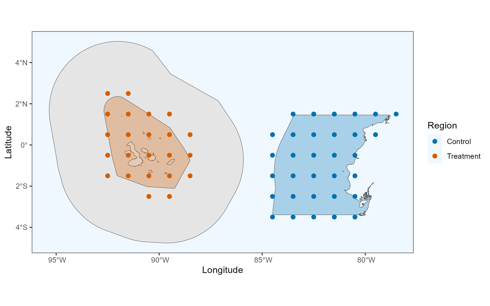
Figure 4: Author’s own work; manuscript in preparation (2026).
Results

Figure 5: Author’s own work; manuscript in preparation (2026).
Revillagigedo National Park
Map
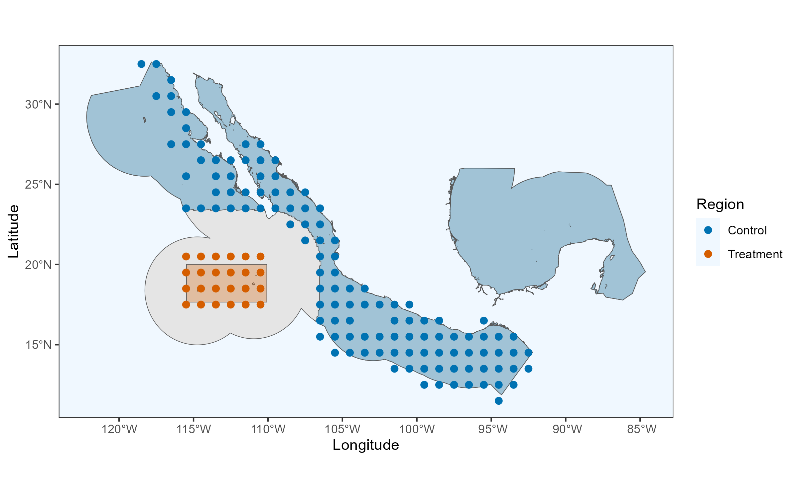
Figure 6: Author’s own work; manuscript in preparation (2026).
Results

Figure 7: Author’s own work; manuscript in preparation (2026).
Palau National Marine Sanctuary
Map
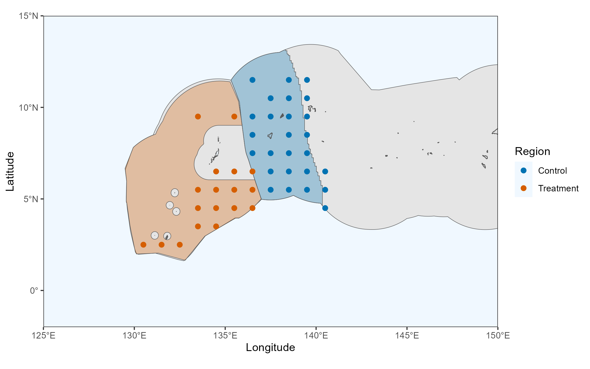
Figure 8: Author’s own work; manuscript in preparation (2026).
Results

Figure 9: Author’s own work; manuscript in preparation (2026).
MPS Symposium 2026